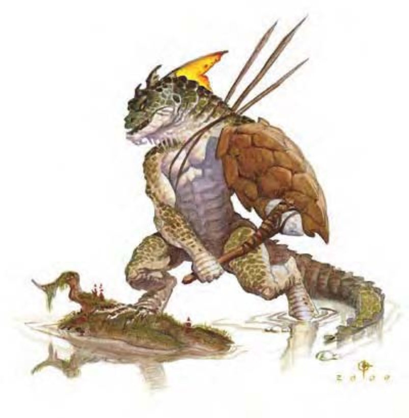

这种高大的人形生物看起来像是一个强壮人类与蜥蜴的综合体，有着带爪的手，长尾与一嘴利齿。
蜥人族是一种原始的爬行人形生物，被激怒时会变得相当危险。
虽然蜥人族属于杂食性，但偏好肉类。传说蜥人族爱吃人肉，但并没有任何证据支持这项指控（虽然有些蜥人部落确实会吃掉俘虏或屠杀敌人）。较开化的蜥人部落会建造房舍、使用各种武器与盾牌，这种部落中的领导者可能拥有偷来的或是与其他智能生物交易得来的装备。
一般蜥人族身高6到7英尺，身上覆有绿色、灰色或棕色的鳞片。用以平衡的尾巴约长3到4英尺。蜥人族的体重约为200到250磅。
蜥人族通晓龙语。
| 资料栏位 | 蜥人族 (Lizardfolk) 中型人形生物 (爬行) |
| 生命骰 | 2d8+2 (11HP) |
| 先攻 | +0 |
| 速度 | 30英尺 (6格) |
| 防御等级 | 15 (+5天生) 或 17 (+5天生、+2重型盾)、接触10、措手不及15或17 |
| 基本攻击/擒抱 | +1 / +2 |
| 攻击 | 爪抓+2近战 (1d4+1)；或木棒+2近战 (1d6+1)；或标枪+1远程 (1d6+1) |
| 全力攻击 | 2爪抓+2近战 (1d4+1) 及 啮咬+0近战 (1d4)；或木棒+2近战 (1d6+1) 及 啮咬+0近战 (1d4)；或标枪+1远程 (1d6+1) |
| 占据/触及 | 5英尺 / 5英尺 |
| 特殊攻击 | ― |
| 特殊能力 | 屏息 |
| 豁免 | 强韧+1、反射+3、意志+0 |
| 属性 | 力量13、敏捷10、体质13、智力9、感知10、魅力10 |
| 技能 | 平衡感+4、跳跃+5、游泳+2 |
| 专长 | 多重攻击 |
| 环境 | 温带沼泽 |
| 组织 | 成队 (2-3)、一团 (6-10，加上50%非战斗人员、1个3-6级干部) 或一族 (30-60，加上2个3-6级校尉、1个4-10级干部) |
| 宝藏 | 二分之一钱币、50%宝物、50%物品 |
| 阵营 | 通常绝对中立 |
| 进化 | 视人物职业而定 |
| 等级修正值 | +1 |
蜥人族的战法为毫无组织的个别打斗。他们习惯正面攻击，集体向前冲，有时会将敌人逼入水中以获得优势。若他们人多势众或领域遭受侵犯，蜥人族会设置陷阱、策划突袭并抢夺切断敌人的补给。较开化的部落则会使用更精巧的战术，也能策划更好的陷阱与突袭。
屏息 (特异)：蜥人族可以闭气的轮数相当于其体质值的四倍，而不会溺水 (见《地下城主指南》第304页)。
技能：由于尾巴的关系，蜥人族在进行“跳跃”、“游泳”与“平衡感”检定时具有+4种族加值。由于携带重型盾，列于数据域位的技能调整值已包含其-2防具检定减值 (“游泳”检定时-4)。
蜥人族社会为族长制，由其中最强大的个体领导部落。蜥人族巫医提供建言，却很少自己担任领袖。蜥人族首重生存，受到威胁或陷入饥饿的蜥人族将不计一切手段确保种族存续，包括采取其他人形生物憎恶的行为。
大部分的蜥人部落位于沼泽地，但有三分之一的人口住在水面下有空气的洞穴里。小部落会互相结盟抵御威胁 (包括强大的蜥人部落)，偶尔也会与洛卡鱼人结盟或侍奉更强大的生物，如纳迦或龙。孤立地区的蜥人族以捕鱼、采集或四处觅食为生，而住在其他人形生物周边的蜥人族则会抢夺食物、装备与奴隶。
在蜥人族巢穴里有无法作战的幼童，数量相当于成年人数量的一半。每10个成年人还有1个蛋。
蜥人族的守护神为蜥蜴亚安亚，他主要关照子民的生存与繁衍。
蜥人族领导者多为野蛮人或德鲁伊。蜥人族牧师 (巫医) 信仰蜥蜴亚安亚。蜥人族牧师可由下列领域择二：动物、植物或水。
蜥人族人物具有下列种族特性：
― +2力量、+2体质、-2智力。
― 中型。
― 蜥人族的基本行走速度为30英尺。
― 种族生命骰：蜥人族起始为2级人形生物，生命骰2d8、基本攻击加值+1，强韧、反射与意志的基本豁免检定则分别是+0、+3及+0。
― 种族技能：蜥人族的人形生物等级使其技能点数为5x (2+智力调整值，最低1)。本职技能为平衡感、跳跃与游泳。蜥人族在进行“平衡感”、“跳跃”与“游泳”检定时具有+4种族加值。
― 种族专长：蜥人族的人形生物等级具有一个专长。
― 武器与防具擅长：蜥人族天生擅长简易武器与盾牌。
― +5天生防御加值。
― 天生武器：2爪抓 (1d4) 及 啮咬 (1d4)。
― 特殊能力 (见前文)：屏息。
― 母语：通用语、龙语。额外语言：水族语、地精语、豺狼人语、兽人语。
― 适合职业：德鲁伊。
― 等级修正值：+1